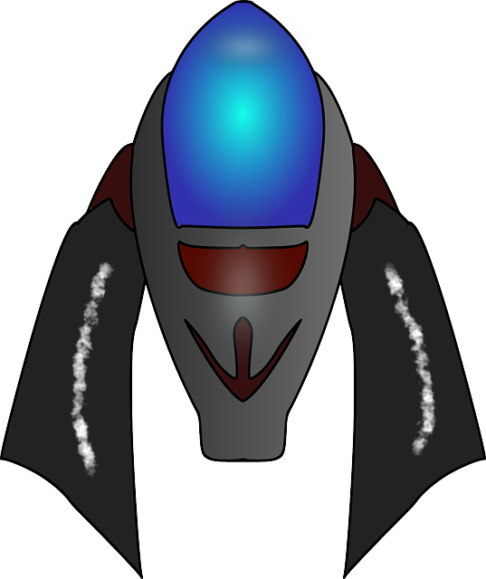

Super Blog
Tu blog de confianza
Este es el título atractivo e interesante del post
Para quienes estén cursando esta carrera, saben que es una profesión de muchas demandas. Algunas universidades exigen dos años de ingeniería en general, para decidir qué es Ingeniería Informática lo que se quiere estudiar como opción principal.

Los blogs son la mejor forma de compartir información y tu ideas. Mucho mas que ir a conferencias o salir en Youtube. Excepto si eres un rockstar. Pero estadísticamente no lo eres.... por ahora.
Vamos dale like y suscribete